|
|
Download version 3.3.13 for |
|
Windows
•
Mac
•
Linux
The latest version:Binary bundle for PC (Thonny+Python): With pip: With Flatpak: Distro packages (may not be the latest version):Debian, Raspbian, Ubuntu, Mint and others: Fedora: |
Thonny

Features
|
Easy to get started. Thonny comes with Python 3.7 built in, so just one simple installer is needed and you're ready to learn programming. (You can also use a separate Python installation, if necessary.) The initial user interface is stripped of all features that may distract beginners. | 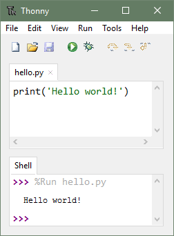 |
|
No-hassle variables. Once you're done with hello-worlds, select View → Variables and see how your programs and shell commands affect Python variables. | 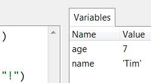 |
|
Simple debugger. Just press Ctrl+F5 instead of F5 and you can run your programs step-by-step, no breakpoints needed. Press F6 for a big step and F7 for a small step. Steps follow program structure, not just code lines. | 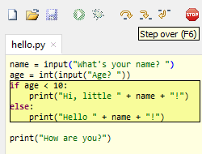 |
|
Step through expression evaluation. If you use small steps, then you can even see how Python evaluates your expressions. You can think of this light-blue box as a piece of paper where Python replaces subexpressions with their values, piece-by-piece. | 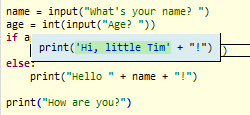 |
|
Faithful representation of function calls. Stepping into a function call opens a new window with separate local variables table and code pointer. Good understanding of how function calls work is especially important for understanding recursion. | 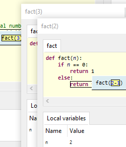 |
|
Highlights syntax errors. Unclosed quotes and parentheses are the most common beginners' syntax errors. Thonny's editor makes these easy to spot. | 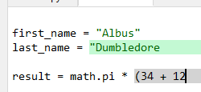 |
|
Explains scopes. Highlighting variable occurrences reminds you that the same name doesn't always mean the same variable and helps spotting typos. Local variables are visually distinguished from globals. | 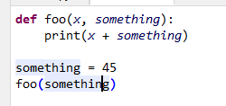 |
|
Mode for explaining references. Variables are initially presented according to simplified model (name → value) but you can switch to more realistic model (name → address/id → value). | 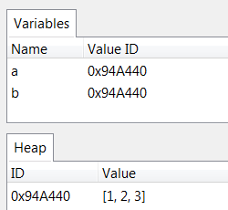 |
|
Code completion. Students can explore APIs with the help of code completion. | 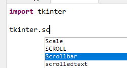 |
|
Beginner friendly system shell. Select Tools → Open system shell to install extra packages or learn handling Python on command line. PATH and conflicts with other Python interpreters are taken care of by Thonny. | 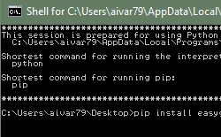 |
|
Simple and clean pip GUI. Select Tools → Manage packages for even easier installation of 3rd party packages. | 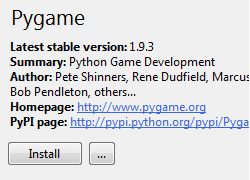 |
Demo
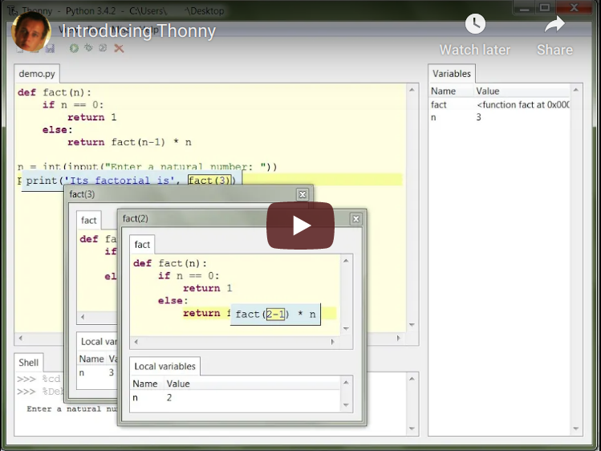Credits
From 2014 to 2018 the main development of Thonny took place in Institute of Computer Science of University of Tartu, Estonia.
Since September 2018 development of Thonny is partially supported by Cybernetica AS.
Development of several features in Thonny 3.0 and 3.3 was proposed and supported by Raspberry Pi Foundation.
We are also grateful for the help of several contributors from the open-source community around the world.
Instructions & downloads
Latest stable releases are linked in the download box at the top of this page. Older releases and prereleases can be found at https://github.com/thonny/thonny/releases
Plug-ins
Thonny has simple infrastructure for extensions.
These are some known Thonny plug-ins:
- thonny-black-format adds a command for formatting current file with Black
- thonny-ev3dev allows uploading code to EV3 (and much more)
- thonny-lahendus allows loading exercises from lahendus.ut.ee and submitting solutions for automatic assessment.
- thonny-edison allows uploading Python code to Edison educational robot
- thonny-dracula adds Dracula syntax theme.
- thonny-onedark adds One Dark syntax theme.
- thonny-crosshair adds commands for invoking CrossHair analyzer.
- thonny-icontract-hypothesis adds commands for invoking icontract-hypothesis analyzer.